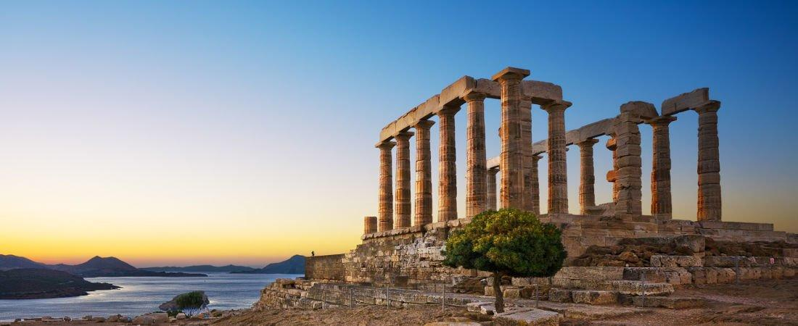

Some of the best ancient monuments everyone needs to see:
The ancient sights in Greece are all very interesting.The Parthenon is a temple dedicated to the patron goddess of the city, Athena. The Minoan Palace of Knossos was built in 1500 BC and has still kept its colors and wall paintings.The Temple of Poseidon was built as a trophy dedicated to Poseidon after winning a naval battle.
